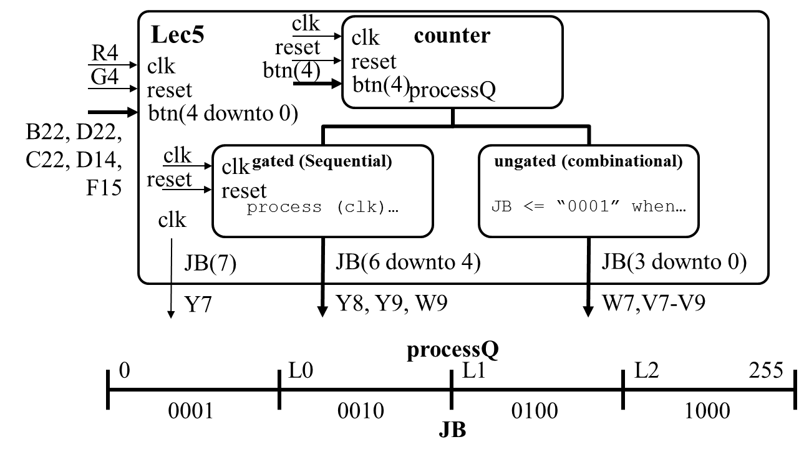
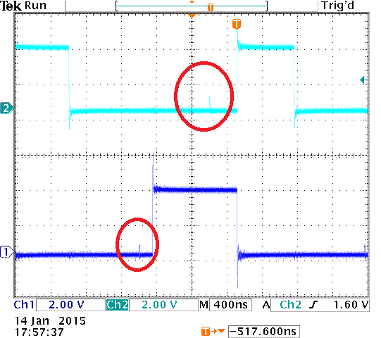

Lesson Notes for Lesson 5
example code for today's class
See lec05 folder in class github repo [class github repo](https://github.com/USAFA-ECE/ece383_wksp)also see hand05.docx
Comparator construction
In the upcoming lab, you will need to generate a signal that behaves according to the following CSA statement:h_synch <= '1' when ((h_count >= 100) and (h_synch < 200)) else '0';
However, if you implemented the h_synch signal using this method (non-gated
output), your circuit would not behave correctly. The fundamental problem
is that non-gated signals generate glitches on their output. These
glitches are generated by the comparators inherent in the CSA above. Fully
understanding this problem and its solution will require some discussion, so let’s
get started.
Large comparators are realized by performing a comparison from the most to least significant bit. At each step, a bit of X is compared to a bit of Y. If the bits are equal, then continue to the next least significant bit. Otherwise, either X or Y is larger, and the comparison is over. In this way, the validity of the output ripples from the most to the least significant bit. Since real logic gates have delay, there is a delay to get a valid bit. This delay is the focus of this lecture.
Gated and non-gated circuits
In the upcoming lab, you will have to design a circuit to output 2 signals crucial to the proper operation of a VGA display. In order for these outputs to properly drive the display, they need to be both glitch free and promptly available after a clock edge. This requires that the outputs be gated - they must be output from flip flops, not combinational logic. In order to demonstrate the potential pitfalls of combinational logic, I coded-up lec05.vhdl (linked at the top of this page).
The outputs from the two processing blocks depend on the value of the counter’s output (processQ) compared to one of three constants: L0, L1, L2 (set inside lec05.vhdl). Both the gated and non-gate circuit have the same relationship between processQ and their output JB - the difference is how this output is generated. The table below illustrates.
| Combinational Realization Non-gated | Sequential Realization Gated |
JB(3 downto 0) <= "0001" when ((processQ >= 0) and (processQ < L0)) else "0010" when ((processQ >= L0) and (processQ < L1)) else "0100" when ((processQ >= L1) and (processQ < L2)) else "1000"; |
process(clk) begin if (rising_edge(clk)) then if (reset = '0') then JB(6 downto 4) <= "000"; elsif ((processQ >= 0) and (processQ < L0)) then JB(6 downto 4) <= "001"; elsif ((processQ >= L0) and (processQ < L1)) then JB(6 downto 4) <= "010"; elsif ((processQ >= L1) and (processQ < L2)) then JB(6 downto 4) <= "100"; elsif (processQ >= L2) then JB(6 downto 4) <= "111"; end if; end if; end process; |
At first glance, you would not be faulted for thinking that these two circuits have identical outputs. Theoretically, they do, but reality has a cruel surprise in the the form of glitches. If you connect an oscilloscope up to the PMOD connector (see page 20 of the Nexys Video Board Reference Manual) corresponding to pins JB(3) and JB(2) (the most 2 significant bits of the non-gated comparator outputs), you would see the trace below.

You should notice that the output is not entirely smooth in the area between the edges. These discontinuities illustrate the fact that the comparator is built from bit-slice comparators and, as a consequence, the output is generated by rippling a signal from the most significant bit of the comparator to the least. This allows the output to temporarily assume an incorrect output until the rippling output reaches the least significant bit. While the discontinuities look small, this is only the portion of the signal that has reached the output pin of the FPGA. Internally, the glitches have a much larger magnitude.